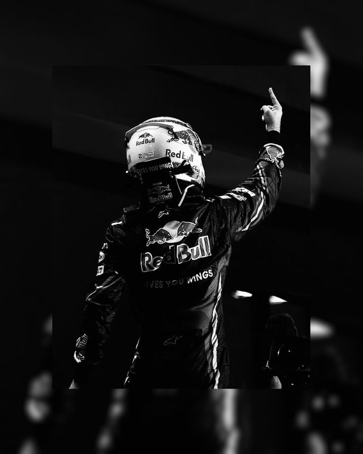

Max Verstappen wasn't just born into racing; he was engineered for it. The son of Jos Verstappen, a former F1 driver, Max's journey from karting to the pinnacle of motorsport was an unprecedented ascent.
Known for his relentless aggression and unmatched precision, Max redefined what is possible in a Formula 1 car. From his shock debut at 17 to his historic titles with Red Bull Racing, he has consistently pushed the boundaries of speed and strategy.


Partnering with Oracle Red Bull Racing, Max achieved the perfect synergy between driver and machine.

Starting with Toro Rosso, he proved his talent immediately, challenging the established order of F1.
Fearless overtaking maneuvers and an uncompromising approach to defending his lead.
Incredible consistency and surgical precision in every corner, lap after lap.
A mental toughness that allows him to thrive under immense pressure and high stakes.
Historic debut with Scuderia Toro Rosso as the youngest driver ever.
First victory in Spain, becoming the youngest winner in F1 history.
Crowned World Champion after a legendary season-long battle.
Absolute dominance of the sport with back-to-back world titles.

"I don't think about the championships, I just want to be the fastest on the track."